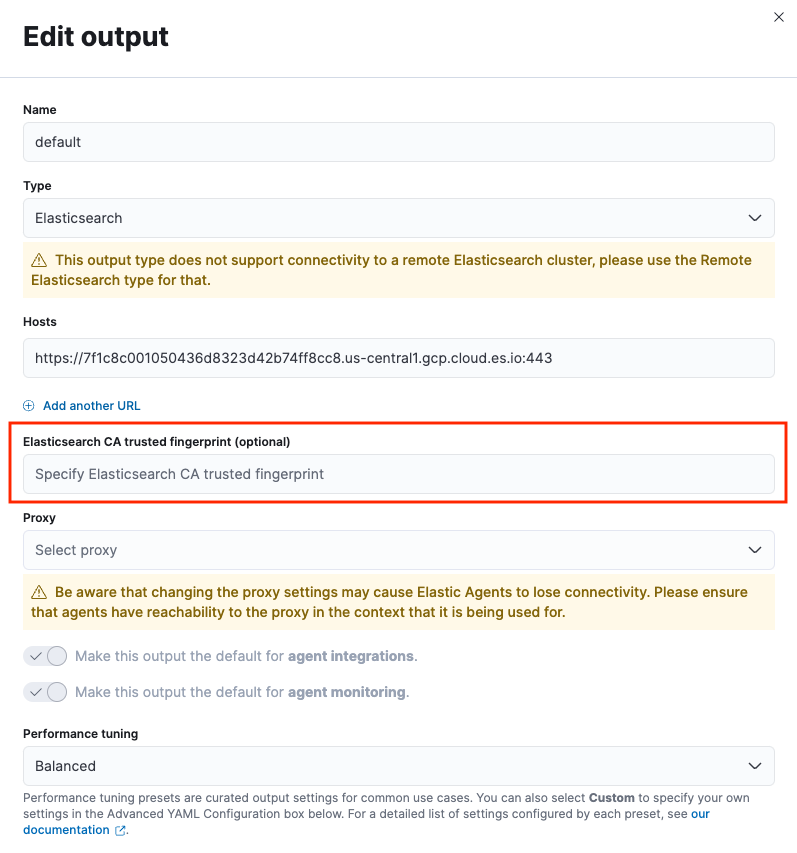

Rotate SSL/TLS CA certificates
editRotate SSL/TLS CA certificates
editIn some scenarioes you may want to rotate your configured certificate authorities (CAs), for instance if your chosen CAs are due to expire. Refer to the following steps to rotate certificates between connected components:
Rotating a Fleet Server CA
editElastic Agent communicates with Fleet Server to receive policies and to check for updates. There are two methods to rotate a CA certificate on Fleet Server for connections from Elastic Agent. The first method requires Elastic Agent to re-enroll with Fleet Server one or more times. The second method avoids re-enrollment and requires overwriting the existing CA file with a new certificate.
Option 1: To renew an expiring CA certificate on Fleet Server with Elastic Agent re-enrollments
Using this method, the Elastic Agent with an old or expiring CA configured will be re-enrolled with Fleet Server using a new CA.
-
Update the Elastic Agent with the new Fleet Server CA:
The Elastic Agent should already have a CA configured. Use the
elastic-agent enrollcommand to re-enroll the agent with an updated, comma separated set of CAs to use.elastic-agent enroll \ --url=<Fleet-Server-URL> \ --enrollment-token=<enrollment-token> \ ... \ --certificate-authorities <original_CA, new_CA>
A new agent enrollment will cause a new agent to appear in Fleet. This may be considered disruptive, however the old agent entry will transition to an offline state. A new agent enrollment is required in order for the Fleet Server configuration to be modified to accept multiple certificate authorities.
At this point, all TLS connections are still relying on the original CA that was provided (
original_CA) in order to authenticate Fleet Server certificates. -
Rotate the certificates on Fleet Server:
This procedure will reissue new certificates based on the new CA. Re-enroll Fleet Server with all the new certificates:
elastic-agent enroll ... --url=<Fleet-Server-URL> \ --enrollment-token=<enrollment-token> \ ... \ --fleet-server-cert <new_cert> --certificate-authorities <new_CA>
This will cause the TLS connections to the Elastic Agents to reset and will load the relevant new CA and certificates to the Fleet Server configuration.
-
The Elastic Agents will automatically establish new TLS connections as part of their normal operation:
The new CA (
new_CA) on the agent installed in Step 1 will be used to authenticate the certificates used by Fleet Server.Note that if the original CA (
original CA) was compromised, then it may need to be removed from the agent’s CA list. To achieve this you need to enroll the agent again:elastic-agent enroll ... --url=<Fleet-Server-URL> \ --enrollment-token=<enrollment-token> \ ... \ --certificate-authorities <new_CA>
Option 2: To renew an expiring CA certificate on Elasticsearch without Elastic Agent re-enrollments
Option 1 results in multiple Elastic Agent enrollments. Another option to avoid multiple enrollments is to overwrite the CA files with the new CA or certificate. This method uses a single file with multiple CAs that can be replaced.
To use this option it is assumed that:
-
Elastic Agents have already been enrolled using a file that contains the Certificate Authority:
elastic-agent enroll ... --url=<Fleet-Server-URL> \ --enrollment-token=<enrollment-token> \ ... \ --certificate-authorities=<CA.pem>
-
The Elastic Agent running Fleet Server has already been enrolled with the following secure connection options, where each option points to files that contain the certificates and keys:
elastic-agent enroll ... --url=<Fleet-Server-URL> \ --enrollment-token=<enrollment-token> \ ... \ --certificate-authorities=<CA.pem> \ --fleet-server-cert=<fleet-cert.pem> \ --fleet-server-cert-key=<key.pem>
To update the Elastic Agent and Fleet Server configurations:
-
Update the configuration with the new CA by changing the content of
CA.pemto include the new CA.cat new_ca.pem >> CA.pem
-
Restart the Elastic Agents. Note that this is not a re-enrollment. Restarting will force the Elastic Agents to reload the CAs.
elastic-agent restart
-
For the Elastic Agent that is running Fleet Server, overwrite the original
certificate,certificate-key, and thecertificate-authoritywith the new ones to use.cat new-cert.pem > cert.pem cat new-key.pem > key.pem cat new_ca.pem > CA.pem
-
Restart the Elastic Agent that is running Fleet Server.
elastic-agent restart
-
If the original certificate needs to be removed from the Elastic Agents, overwrite the
CA.pemwith the new CA only:cat new_ca.pem > CA.pem
-
Finally, restart the Elastic Agents again.
elastic-agent restart
Rotating an Elasticsearch CA for connections from Fleet Server
editFleet Server communicates with Elasticsearch to send status information to Fleet about Elastic Agents and to retrieve updated policies to ship out to all Elastic Agents enrolled in a given policy. If you have Fleet Server deployed on-premise, you may wish to rotate your configured CA certificate, for instance if the certificate is due to expire.
To rotate a CA certificate on Elasticsearch for connections from Fleet Server:
-
Update the Fleet Server with the new Fleet Server CA:
The Elastic Agent running Fleet Server should already have a CA configured. Use the
elastic-agent enrollcommand to re-enroll the agent running Fleet Server with an updated, comma separated set of CAs to use.elastic-agent enroll \ --fleet-server-es=<Elasticsearch-URL> \ --fleet-server-service-token=<service-token> \ ... \ --fleet-server-es-ca <original_ES_CA, new_ES_CA>
A new agent enrollment will cause two Fleet Server agents to appear in Fleet. This may be considered disruptive, however the old agent entry will transition to offline. A new agent enrollment is required in order for the Fleet Server configuration to be modified to accept multiple certificate authorities.
At this point, all TLS connections are still relying on the original CA that was provided (
original_ES_CA) in order to authenticate Elasticsearch certificates. Re-enrolling the Fleet Server will cause the agents going through that Fleet Server to also reset their TLS, but the connections will be re-established as required. -
Rotate the certificates on Elasticsearch.
Elasticsearch will use new certificates based on the new Elasticsearch CA. Since the Fleet Server has the original and the new Elasticsearch CAs in a chain, it will accept original and new certificates from Elasticsearch.
Note that if the original Elasticsearch CA (
original_ES CA) was compromised, then it may need to be removed from the Fleet Server’s CA list. To achieve this you need to enroll the Fleet Server agent again (if re-enrollment is a concern then use a file to hold the certificates and certificate-authority):elastic-agent enroll \ --fleet-server-es=<Elasticsearch-URL> \ --fleet-server-service-token=<service-token> \ ... \ --fleet-server-es-ca <new_ES_CA>
Rotating an Elasticsearch CA for connections from Elastic Agent
editUsing configuration information from a policy delivered by Fleet Server, Elastic Agent collects data and sends it to Elasticsearch.
To rotate a CA certificate on Elasticsearch for connections from Elastic Agent:
- In Fleet open the Settings tab.
- In the Outputs section, click the edit button for the Elasticsearch output that requires a certificate rotation.
-
In the Elasticsearch CA trusted fingerprint field, add the new trusted fingerprint to use. This is the SHA-256 fingerprint (hash) of the certificate authority used to self-sign Elasticsearch certificates. This fingerprint will be used to verify self-signed certificates presented by Elasticsearch.
If this certificate is present in the chain during the handshake, it will be added to the
certificate_authoritieslist and the handshake will continue normally.